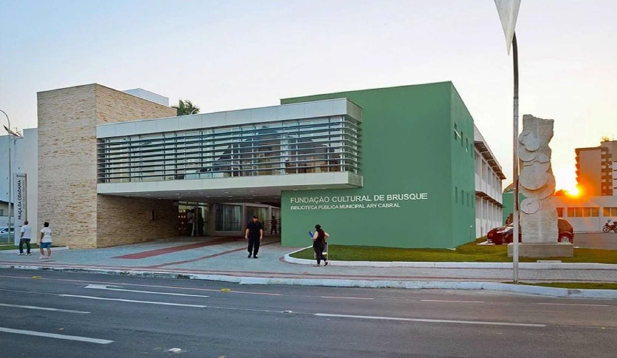
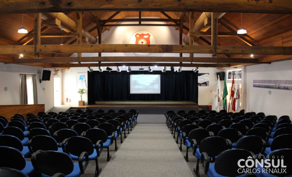
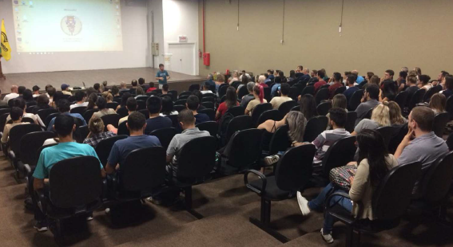
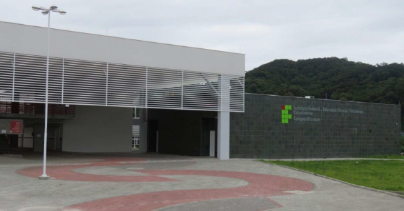
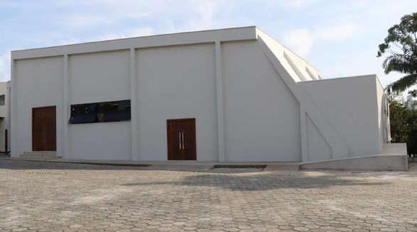
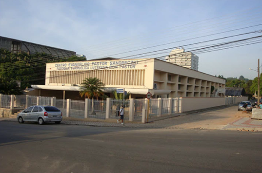
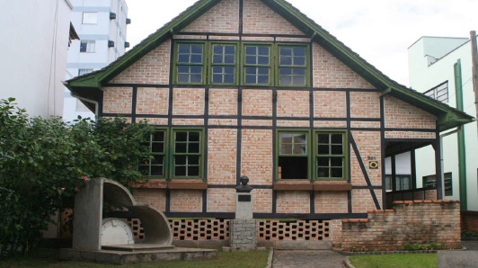

Fundação cultural de Brusque


FUNDAÇÃO CULTURAL DE BRUSQUE

ANFITEATRO DO COLÉGIO CÔNSUL CARLOS RENAUX

AUDITÓRIO DA UNIASSELVI CAMPUS BRUSQUE

ANFITEATRO DO INSTITUTO FEDERAL CATARINENSE – CAMPUS BRUSQUE

ANFITEATRO DA PARÓQUIA SÃO LUIZ GONZAGA

AUDITÓRIO DO CENTRO EVANGÉLICO PASTOR SANDRECZKI

MUSEU CASA DE BRUSQUE